Roko
El Ñam Ñam rojo. Bueno, valiente y con unos ojos tan altos que ve más lejos que nadie.
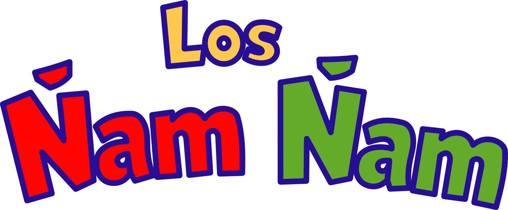
Un cuento de extraterrestres buenos, traviesos y muy curiosos
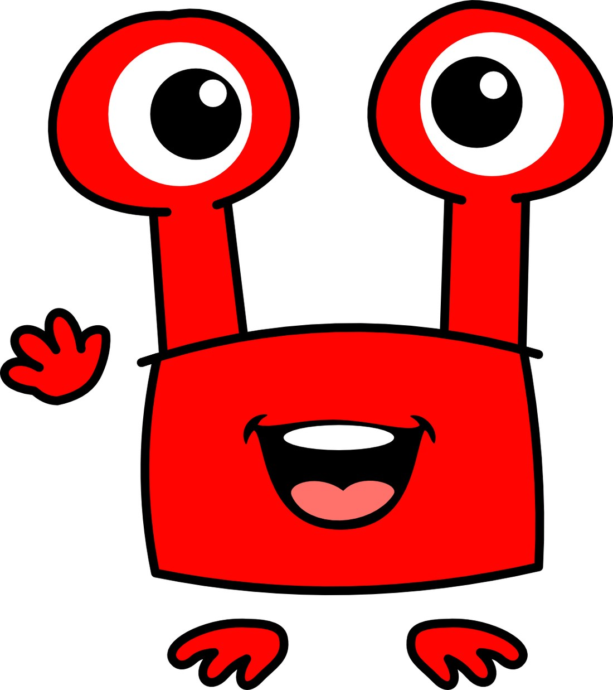
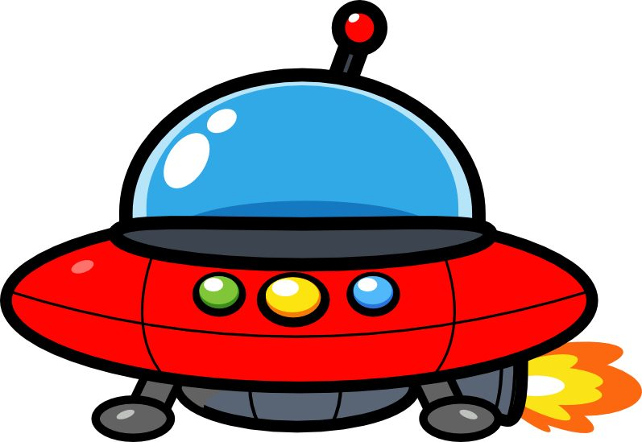

El Ñam Ñam rojo. Bueno, valiente y con unos ojos tan altos que ve más lejos que nadie.
El Ñam Ñam verde. Travieso, listísimo y siempre con un plan… que casi nunca sale como pensaba.
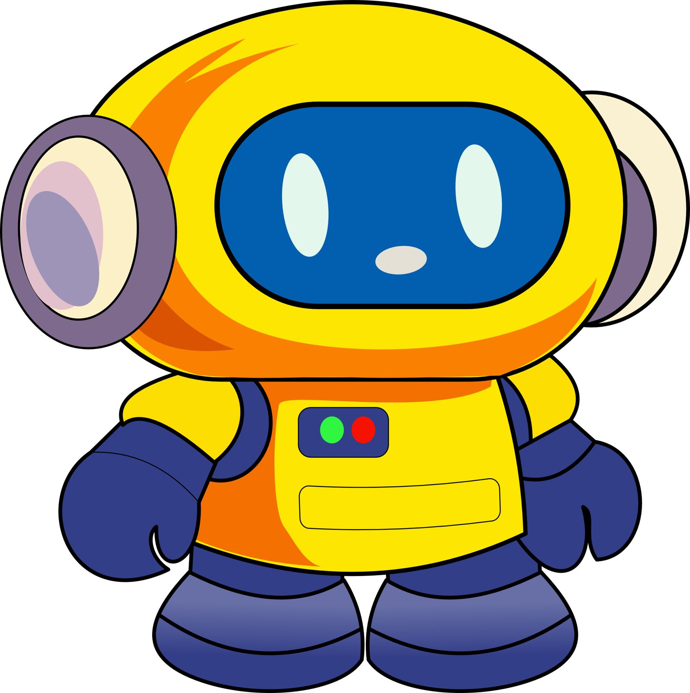
El robot mecánico de Ñamlandia. Lo arregla todo, menos los líos de Grin.
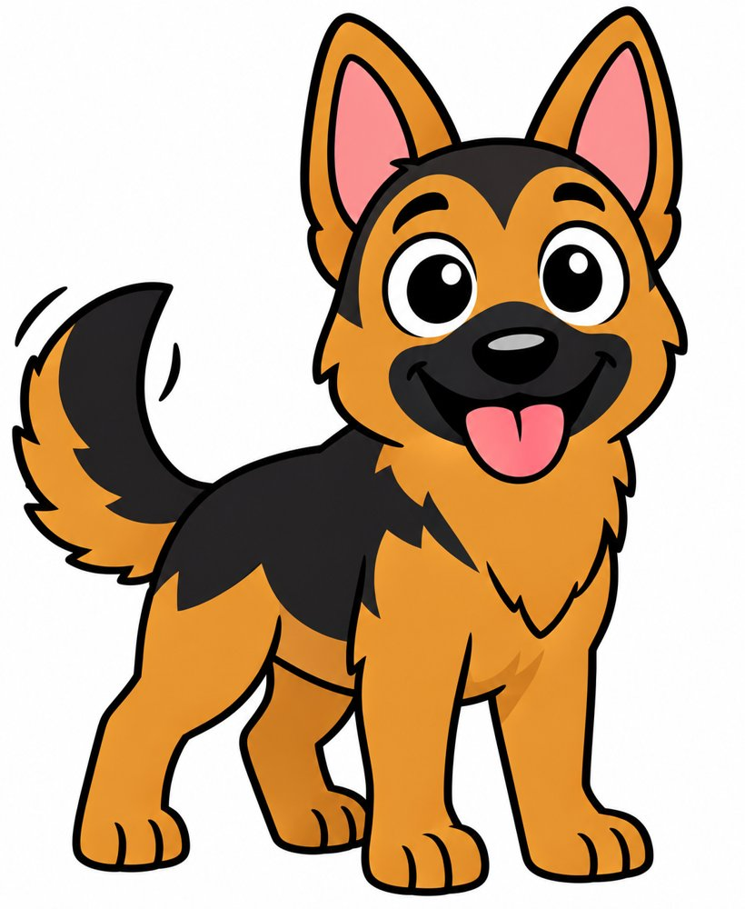
Un pastor alemán de la Tierra. Leal, valiente y con un olfato increíble. ¡Será el mejor amigo de los Ñam Ñam!
Capítulo 1
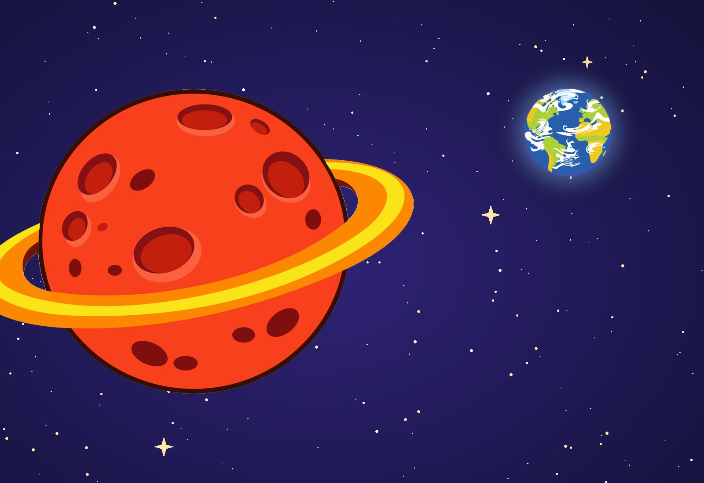
Muy, muy lejos, más allá de las estrellas que ves por la noche, hay un planeta rojo con un anillo dorado que gira y gira como un aro de baile. Se llama Ñamlandia.
Allí viven los Ñam Ñam: unos extraterrestres pequeñitos, con dos ojos enormes en lo alto de dos antenas y patitas que hacen plic, plic al caminar.
Si miras bien, en un rincón del cielo de Ñamlandia brilla un puntito azul y verde. Casi nadie se fija en él. Casi nadie.
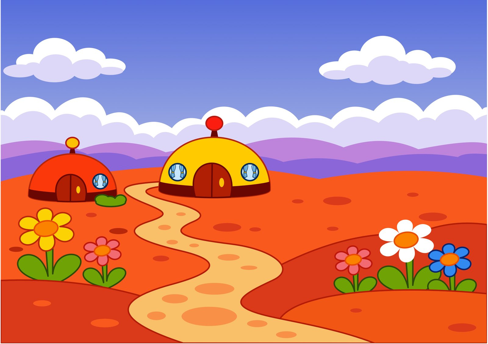
Los Ñam Ñam viven en casitas redondas como medias naranjas, con ventanas de burbuja y una antena en el tejado. Entre casa y casa crecen flores de todos los colores, y un camino de arena naranja lleva hasta las colinas moradas.
En Ñamlandia hay un secreto que todo el mundo sabe: los Ñam Ñam rojos son buenos, de corazón blandito… y los verdes son traviesos, muy traviesos.
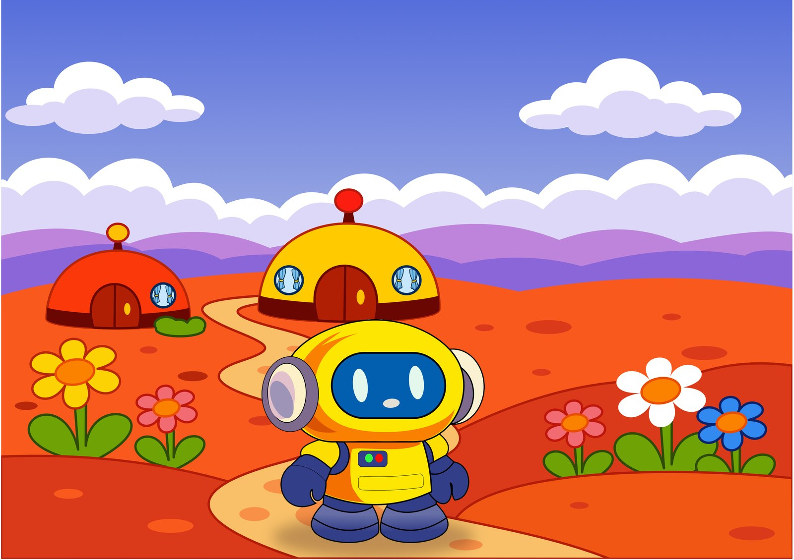
Por el camino de arena viene un vecino muy especial: Tornillo, el robot mecánico de Ñamlandia. Anda despacito, clonc, clonc, y cuando se alegra le hacen bip, bup las luces de la cara.
Tornillo arregla relojes, farolas y molinos de burbujas. Lo arregla todo… menos los líos de Grin. Y, allá en lo alto de la colina, en secreto, está construyendo algo enorme: una nave para viajar por las estrellas.
Este es Roko. Es rojo como un tomate y siempre está sonriendo. Ayuda a su abuela a regar las flores, comparte sus galletas de luna y nunca, nunca dice mentiras.
Pero Roko tiene una cosa muy especial: es el Ñam Ñam más curioso de todo el planeta. Quiere saber por qué brillan las estrellas, a qué huelen las nubes y qué habrá más allá del cielo.
Y este es Grin, su mejor amigo. Es verde como un guisante y tiene esa sonrisa torcida que pone cuando está a punto de hacer una trastada.
Grin ha hecho cosquillas a las flores con una pluma para que se rieran, le ha puesto un sombrero a un espantapájaros y una vez enseñó a cantar a un cactus. Pero, aunque sea un trasto, quiere muchísimo a Roko.
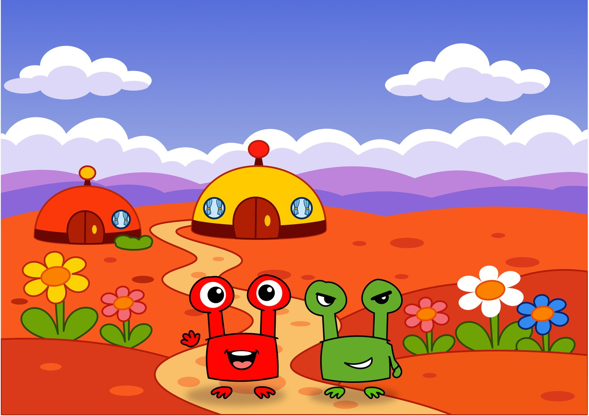
Son tan distintos como un tomate y un guisante, pero van siempre juntos. Roko pregunta, Grin se inventa, y los dos acaban riéndose tanto que se les doblan las antenas.
Cuando los ves venir por el camino, plic, plic, plic, ya sabes que algo va a pasar.
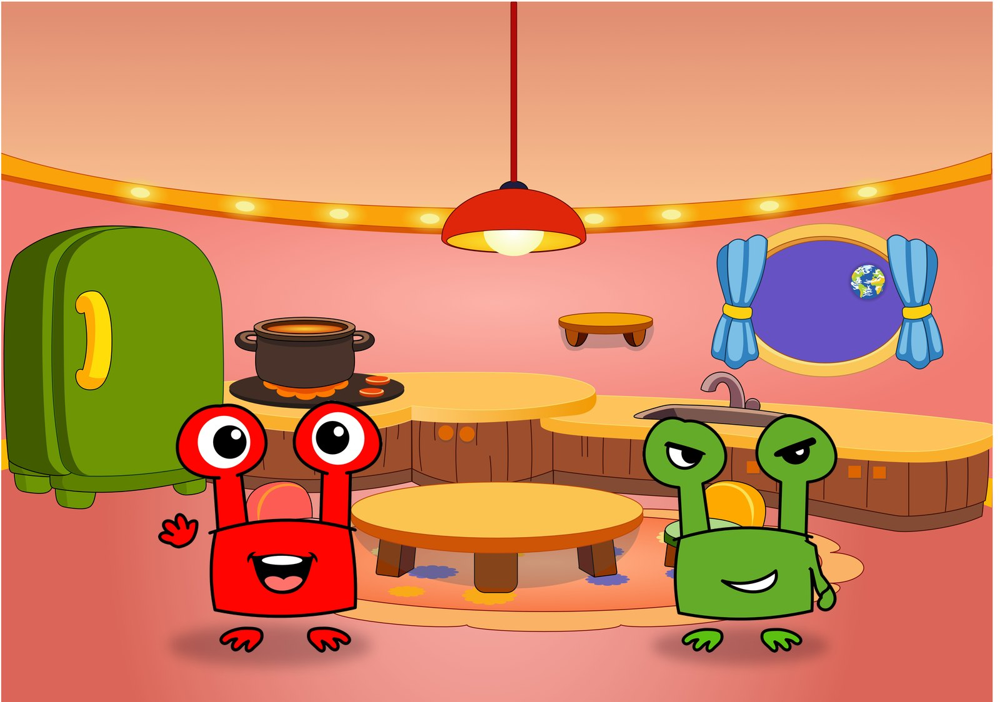
Cada tarde, Grin se presenta en casa de Roko justo a la hora de la merienda. ¡Qué casualidad!
En la cocina redonda, la olla burbujea con sopa de estrellas. Huele tan bien que a los dos se les estiran las antenas. ¡Ñam, ñam!, dicen a la vez. Y así es, precisamente, como los Ñam Ñam recibieron su nombre.
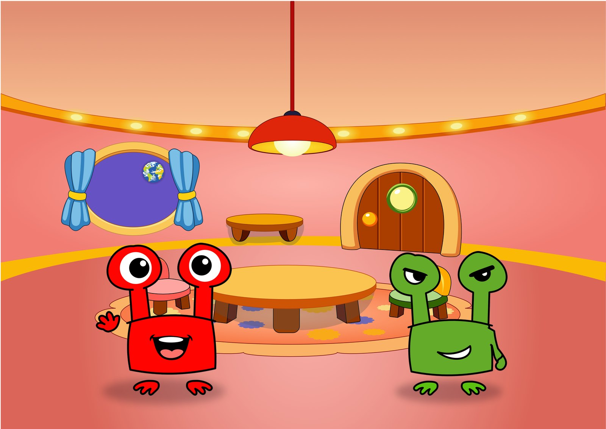
Después de merendar, los dos amigos se quedan un rato en el comedor, delante de la gran ventana redonda. Por ella se ve el cielo morado de Ñamlandia y, muy a lo lejos, un puntito que brilla.
Roko se acerca de puntillas. Grin también. Los dos pegan la nariz al cristal.
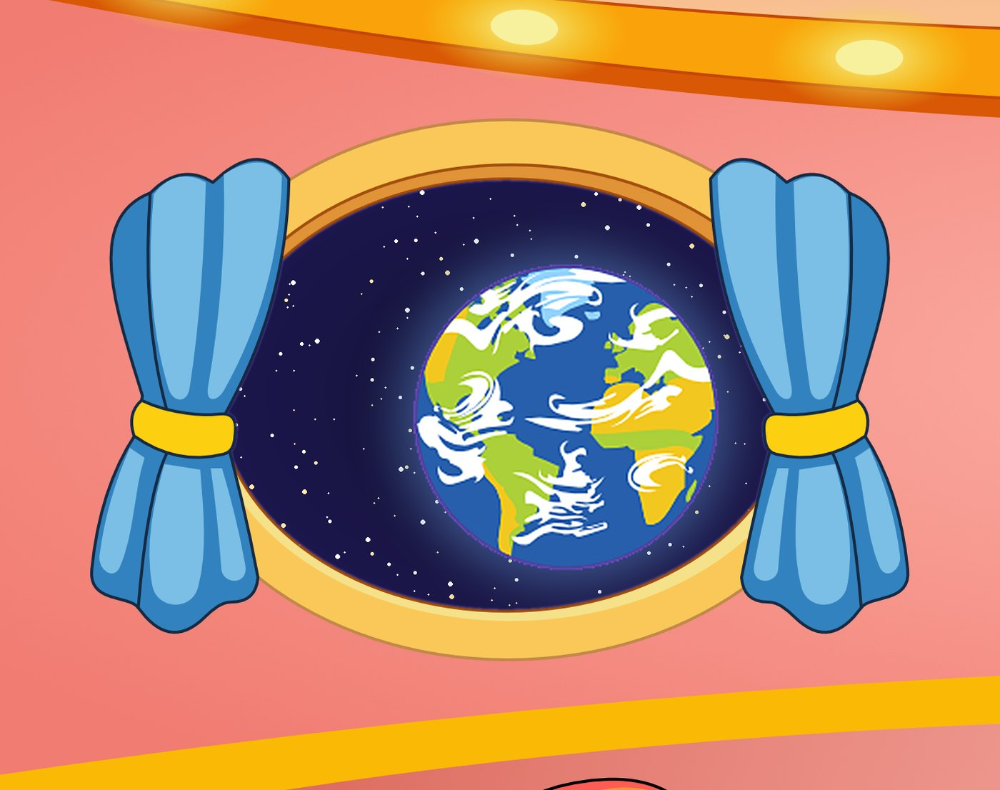
Es un planeta azul y verde, con nubes blancas como algodón.
—¿Tú crees que allí vive alguien? —pregunta Roko.
—Seguro que sí —dice Grin—. Y seguro que tienen cosas que nosotros no hemos visto nunca.
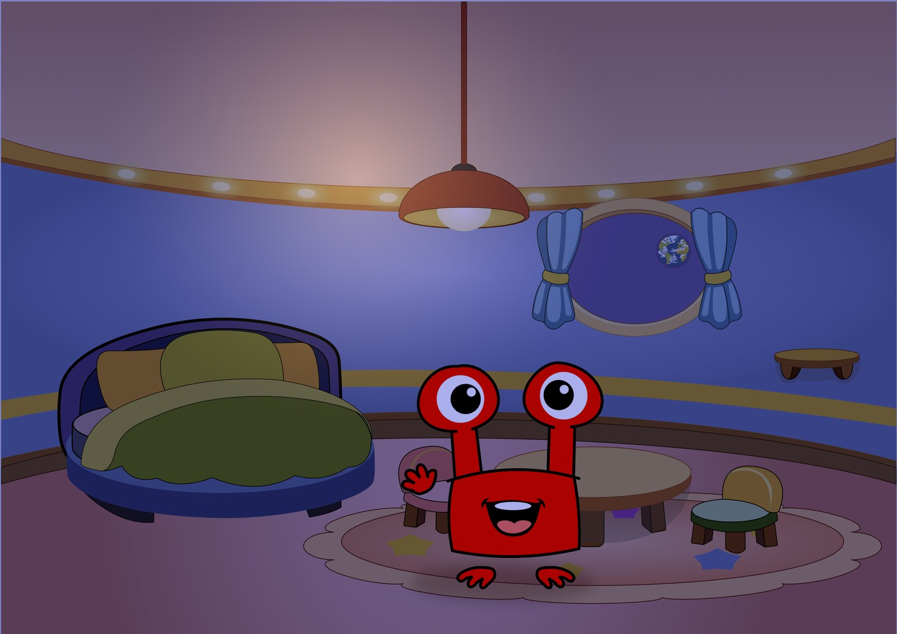
Esa noche, Roko no puede dormir. Da vueltas en su cama blandita y mira el planeta azul por la ventana. ¿Habrá allí niños? ¿Habrá animales? ¿Comerán también sopa de estrellas?
De repente… toc, toc, toc. Alguien llama al cristal.
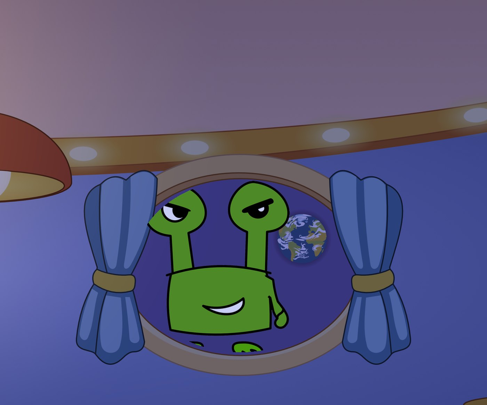
Es Grin, con los ojos brillando como dos linternas.
—Roko —susurra—, he tenido una idea. Una idea GENIAL. ¿Y si vamos a verlo de cerca?
Capítulo 2
Roko se pone sus zapatillas de muelles y sale por la ventana sin hacer ruido. Plic, plic, plic. Los dos amigos cruzan el pueblo dormido hasta el taller que hay en lo alto de la colina.
Allí, bajo la luz de las dos lunas, descansa la nave más bonita de Ñamlandia: roja y redonda como un plato volador, con una cúpula azul de cristal, tres luces de colores y una antena con una bolita en la punta.
—¿A que es preciosa? —susurra Grin.
Junto a la nave, un robot amarillo duerme de pie. Es Tornillo, el mecánico de Ñamlandia, ¿te acuerdas? Ha construido esa nave pieza a pieza durante cien lunas.
Pero Grin tropieza con una lata de aceite y… ¡CLONC! Las luces de la cara de Tornillo se encienden. Bip, bup, bip.
—¿Quién anda ahí? —pregunta con su voz de lata—. ¡Ah, sois vosotros! ¿No deberíais estar durmiendo?
—Es que queríamos ver la nave de cerca —dice Roko, con las antenas un poco caídas.
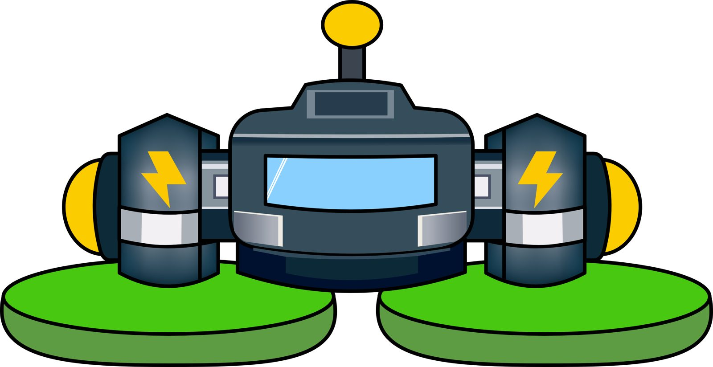
Tornillo sonríe, porque en el fondo le encanta enseñar sus inventos. Levanta una lona y aparece una máquina brillante con dos rayos amarillos pintados y una antena en lo alto.
—Os presento el X-Turbo —dice orgulloso—. El motor más rápido de toda la galaxia. Con él, la nave puede viajar más allá de las estrellas.
Luego levanta un dedo muy serio:
—Pero recordad: el botón del X-Turbo NO se toca. Todavía no está listo. Nunca, nunca, NUNCA.
Grin pone su sonrisa torcida. Roko, en cambio, empieza a preocuparse.
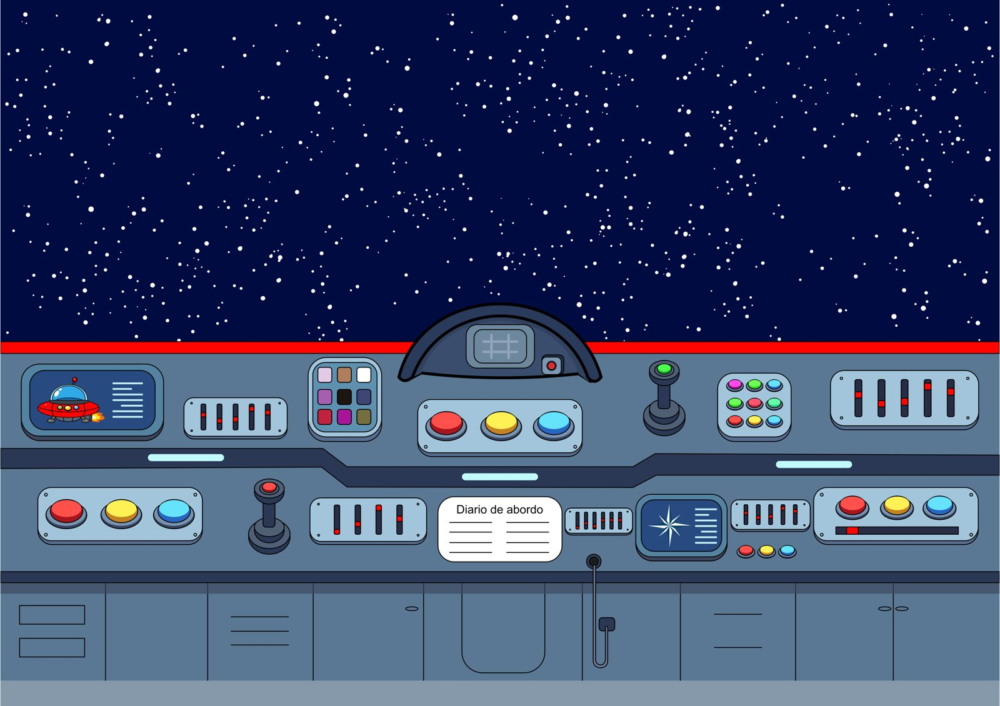
Tornillo les deja subir un ratito a la nave. ¡Por dentro es todavía más increíble! Hay palancas, pantallas, lucecitas que parpadean y un cuaderno que dice Diario de a bordo.
Y en el centro del panel, brillando como un caramelo, hay un botón redondo que pone X-TURBO.
Grin lo mira. El botón parece mirarle a él.
—Grin, ni se te ocurra —dice Roko.
—Solo voy a tocarlo un poquito. Un poquitito de nada…
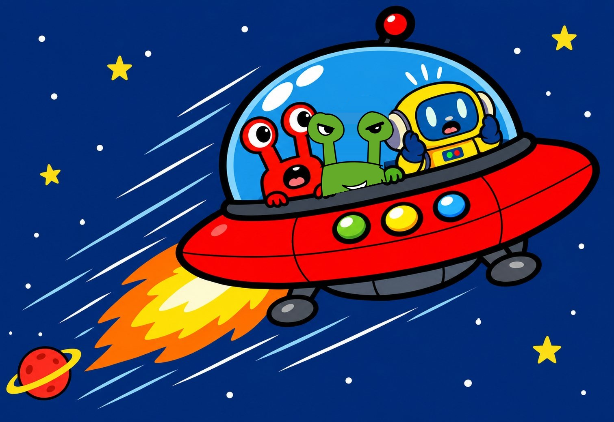
¡CLIC!
La nave tiembla. Las luces se ponen a bailar. El X-Turbo ruge como un dragón con hipo: ¡BRRRRRUUUUUMMM!
Tornillo salta dentro justo a tiempo, la cúpula se cierra de golpe y… ¡FIIIUUUUUU! La nave sale disparada hacia el cielo, dejando una estela de fuego naranja.
Roko se agarra a su asiento con los ojos como platos. Tornillo se lleva las manos a la cabeza. Y Grin… Grin sonríe, aunque un poquito asustado.
—Uy —dice—. Creo que lo he tocado demasiado.
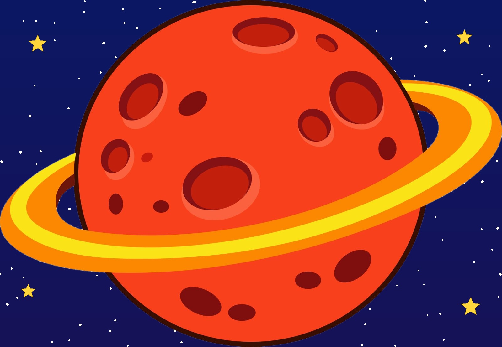
Por la ventana trasera, Ñamlandia se hace pequeñita, pequeñita, hasta parecer una canica roja con un anillo dorado.
—¡Tornillo, para la nave! —grita Roko.
Tornillo pulsa botones, mueve palancas y mira la pantalla. Bip… bup… biiiip.
—No puedo pararla. El X-Turbo tiene un único destino programado…
Y señala con su dedo de metal hacia un puntito que brilla, cada vez más grande. Un planeta azul y verde, con nubes blancas como algodón.
—¡El planeta azul! —exclaman Roko y Grin a la vez.
Capítulo 3
El planeta azul se hace grande, grande, GRANDÍSIMO. Ya ocupa toda la ventana. De repente, en el panel de mandos se encienden todas las lucecitas rojas a la vez: ¡Piii, piii, piii!
Tornillo abre a toda prisa el Diario de a bordo y lee en voz alta:
—«Para entrar en un planeta con aire hay que ir muy despacito. Si vas demasiado rápido, el aire se calienta y quema como una estufa».
Los tres se miran. El X-Turbo va rapidísimo.
—¡Abrochaos los cinturones! —grita Tornillo.
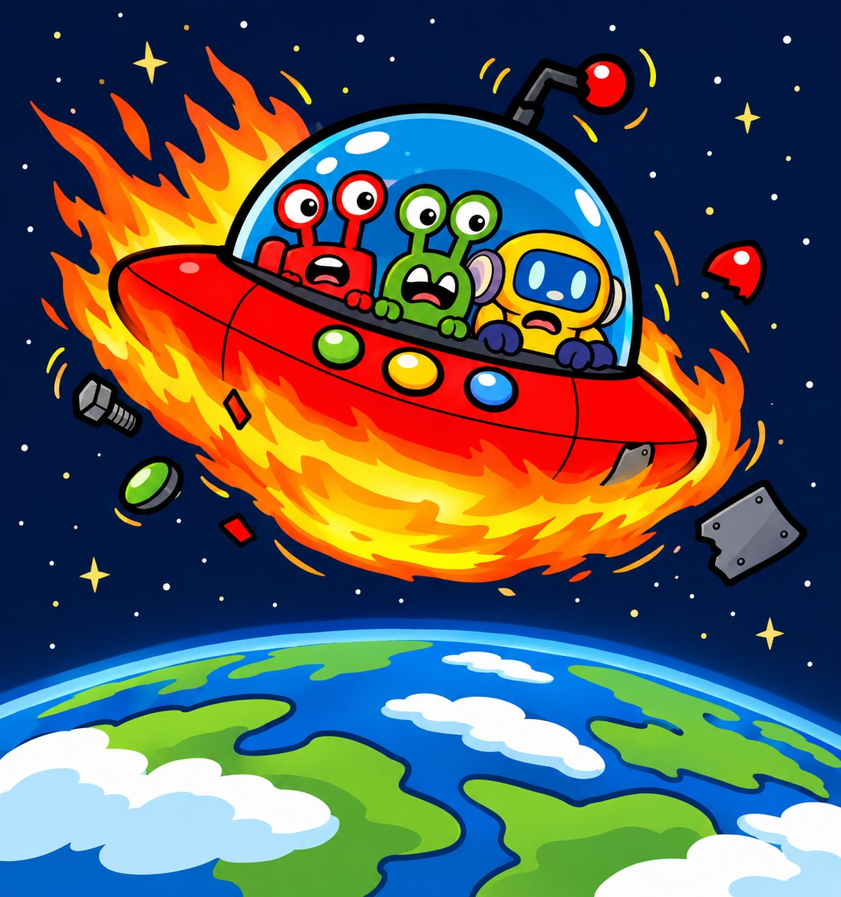
¡FFFSSSHHH!
La nave entra en la atmósfera, la capa de aire que envuelve la Tierra como una manta. El aire roza la nave tan fuerte que se pone al rojo vivo y se rodea de llamas naranjas.
La nave se sacude como una maraca: ¡traca, traca, traca! Por la ventana ven salir volando una luz verde, un tornillo gordo y una placa de metal. Y la antena se dobla como un fideo.
—¡Perdón, perdón, perdón! —chilla Grin, tapándose los ojos.
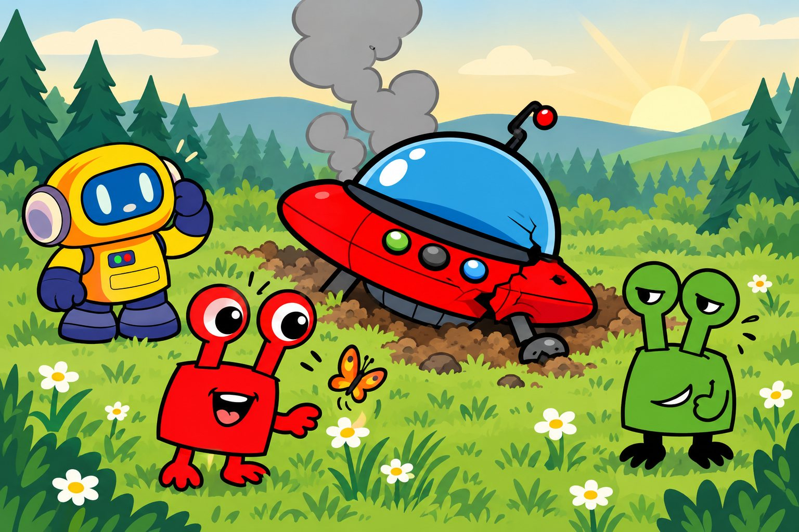
La nave atraviesa las nubes, rebota sobre las copas de los pinos y… ¡PATAPLOF! Aterriza de morros en un prado, levantando un montón de tierra.
Silencio. Solo se oye el humo que sale de la nave: fsss, fsss. La cúpula se abre con un chirrido y los tres asoman las antenas.
Está amaneciendo. La hierba es verde y blandita, hay florecitas blancas y huele a pino. Una mariposa naranja se posa delante de Roko.
—¡Hala! —susurra Roko, con los ojos brillando—. ¡Estamos en el planeta azul!
Tornillo saca el X-Turbo de la nave y lo revisa con su linterna. Bip… bup… bup… Pone cara de preocupación.
—Malas noticias. Al cruzar la atmósfera hemos perdido tres piezas: la luz verde, el tornillo gordo y la placa del motor. Sin ellas el X-Turbo no arranca.
—¿Y entonces… cómo volvemos a casa? —pregunta Roko.
—Tendremos que encontrarlas y arreglar la nave aquí, en la Tierra.
Grin baja tanto las antenas que casi tocan el suelo. Por primera vez en su vida, no tiene ganas de hacer ninguna trastada.
—Lo siento mucho. Ha sido culpa mía…
Roko le da un abrazo de Ñam Ñam, que es un abrazo con antenas incluidas.
—No pasa nada, Grin. Lo arreglaremos juntos. Los amigos están para eso.
Y Tornillo, que es de metal pero tiene un corazón muy blandito, se une al abrazo. ¡Clonc!
Capítulo 4
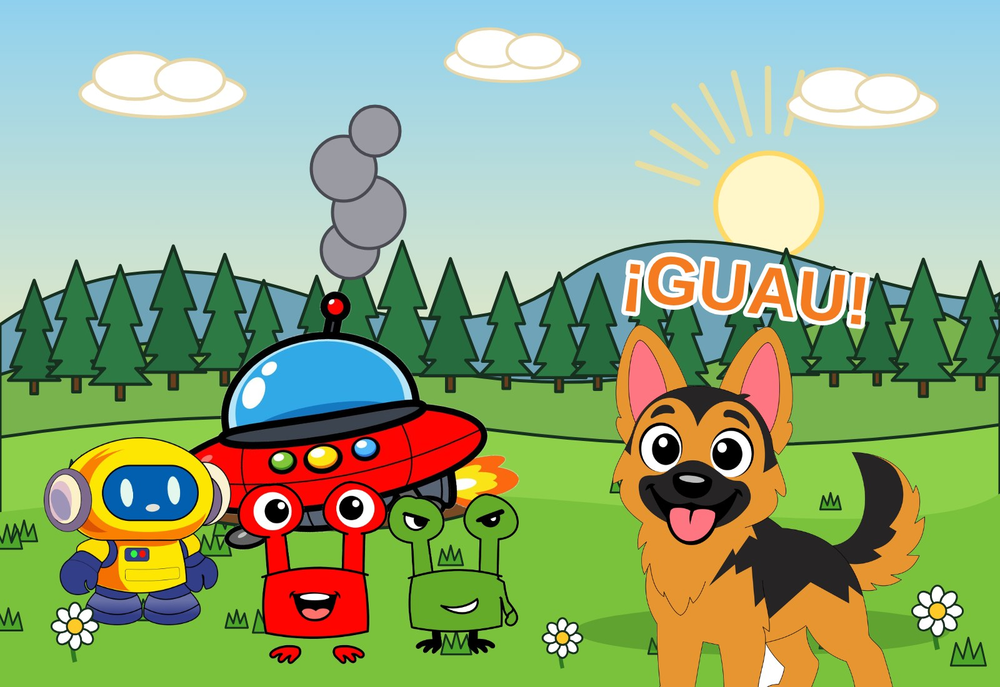
¡GUAU!
Las hojas de los pinos tiemblan. Los pájaros salen volando. Y Grin, que nunca tiene miedo de nada, se esconde detrás de Tornillo a la velocidad de un rayo.
—Yo no estoy asustado —susurra—. Solo estoy… mirando desde aquí atrás.
Entre los árboles asoma un hocico negro y húmedo. Después, dos orejas puntiagudas como velas. Y por fin sale al prado el animal más grande que han visto en su vida.
Tiene el pelo marrón y negro, una cola que se enrosca como un signo de interrogación y unos ojos redondos y brillantes. Se queda quieto, con la cabeza ladeada, mirándolos.
Tornillo enciende su linterna y le hace un escáner. Bip… bup… biiip.
—Animal de la Tierra. Cuatro patas. Una cola. Dientes… bastantes. Nivel de peligro… —Tornillo se queda pensando—. Nivel de peligro: no lo sé.
—¡Pues eso no ayuda nada! —protesta Grin desde atrás.
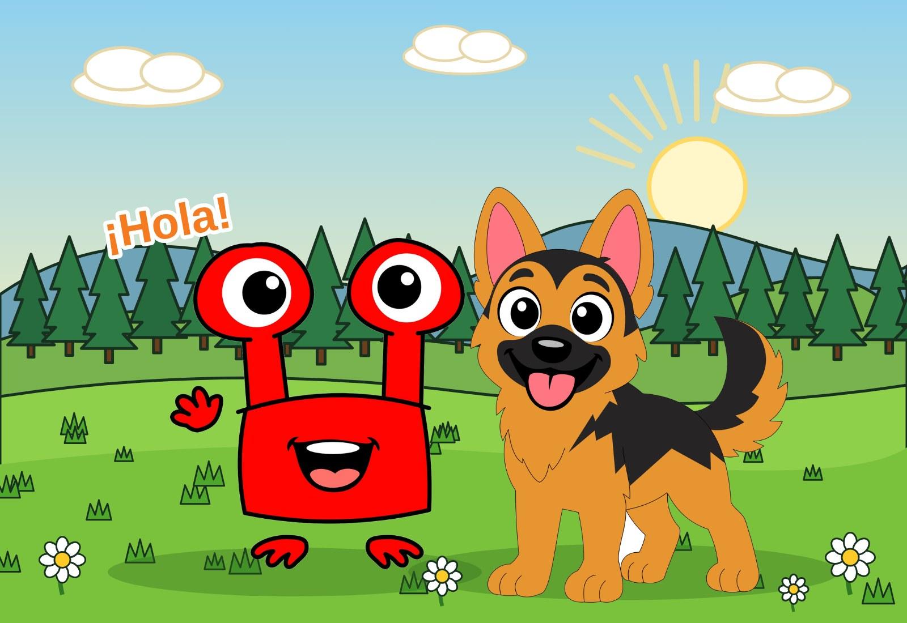
Roko traga saliva. Le tiemblan un poquito las antenas. Pero es el Ñam Ñam más curioso de todo Ñamlandia, y la curiosidad es más fuerte que el miedo.
Da un paso. Plic. Da otro. Plic. Y levanta la mano muy despacio.
—Hola. Me llamo Roko. No queremos hacerte daño. Hemos llegado de muy lejos y estamos un poco perdidos.
El perro olfatea el aire. Suf, suf, suf. Mira a Roko. Mira su mano. Y entonces, muy despacio… mueve la cola.
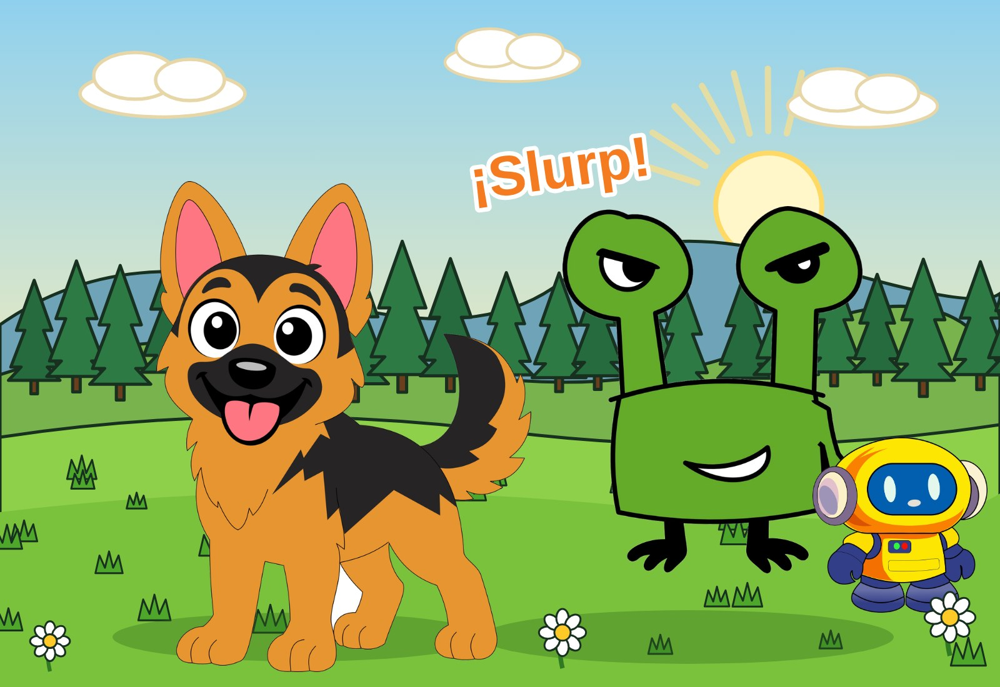
La cola va a la derecha. A la izquierda. A la derecha otra vez. ¡Cada vez más rápido, como un molino de viento!
De un salto, el perro cruza el prado y… ¡SLURP! Le lame la cara a Roko de arriba abajo. Roko se parte de risa. ¡Jajaja!
Grin asoma una antena. Luego la otra. Y cuando por fin sale de su escondite… ¡SLURP! Lengüetazo en toda la cara.
—¡Puaj! ¡Está todo mojado! —grita Grin. Pero se está riendo tanto que se le caen las lágrimas—. ¡Y me gusta!
El perro ladra otra vez, contentísimo: ¡GUAU! Y su voz retumba por todo el valle, como una tormenta de verano.
—¡Menudo ladrido! —dice Grin—. Parece un trueno.
Roko se queda pensando. Después sonríe.
—Trueno. Te llamas Trueno. ¿Te gusta?
Y el perro mueve la cola tan fuerte que tira a Grin sentado en la hierba. ¡Claro que le gusta!
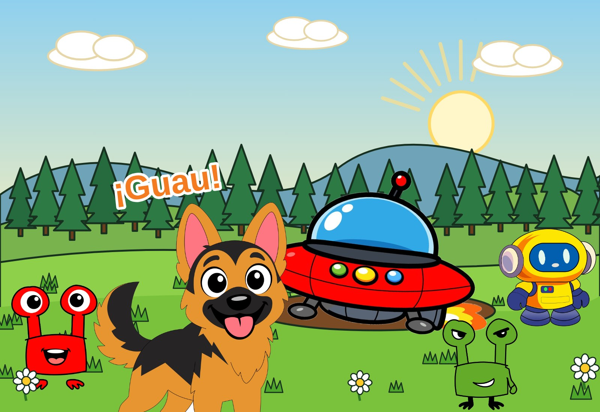
Entre carcajadas, Tornillo les enseña la nave rota y les cuenta todo: la atmósfera, el humo, las tres piezas que se perdieron por el camino.
Trueno escucha con la cabeza ladeada, como si entendiera cada palabra. Luego se acerca a la nave y la huele despacito, de arriba abajo. Suf, suf, suf. Se detiene en el sitio donde faltaba la luz verde.
Sus orejas se ponen rectas como dos antenas.
—¿Ha encontrado algo? —pregunta Roko.
—Bip, bup… Creo que sí —dice Tornillo—. Los perros tienen un olfato mil veces mejor que el nuestro.
Capítulo 5
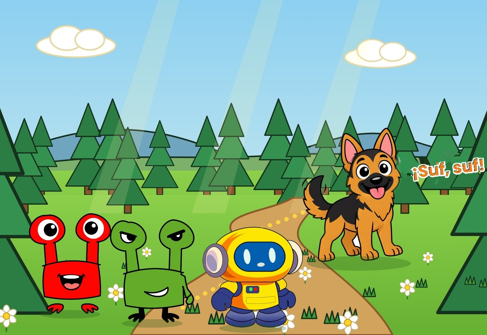
¡Suf, suf, suf!
Trueno corre entre los pinos con el hocico pegado al suelo. Sus patas hacen chof, chof sobre las hojas secas y su cola va de un lado a otro como un abanico.
Roko, Grin y Tornillo corren detrás: plic, plic, plic y clonc, clonc, clonc.
—¡Más despacio, Trueno! —resopla Grin—. ¡Tengo las patitas muy cortas!
—Y yo tengo las piernas de lata —dice Tornillo—. Bip, bup… Me estoy quedando sin aceite.
El bosque huele a pino, a tierra mojada y a setas. Entre las ramas caen rayos de sol como cortinas de oro. De pronto, Trueno se para en seco. Sus orejas se ponen rectas como dos antenas y levanta el hocico muy, muy arriba.
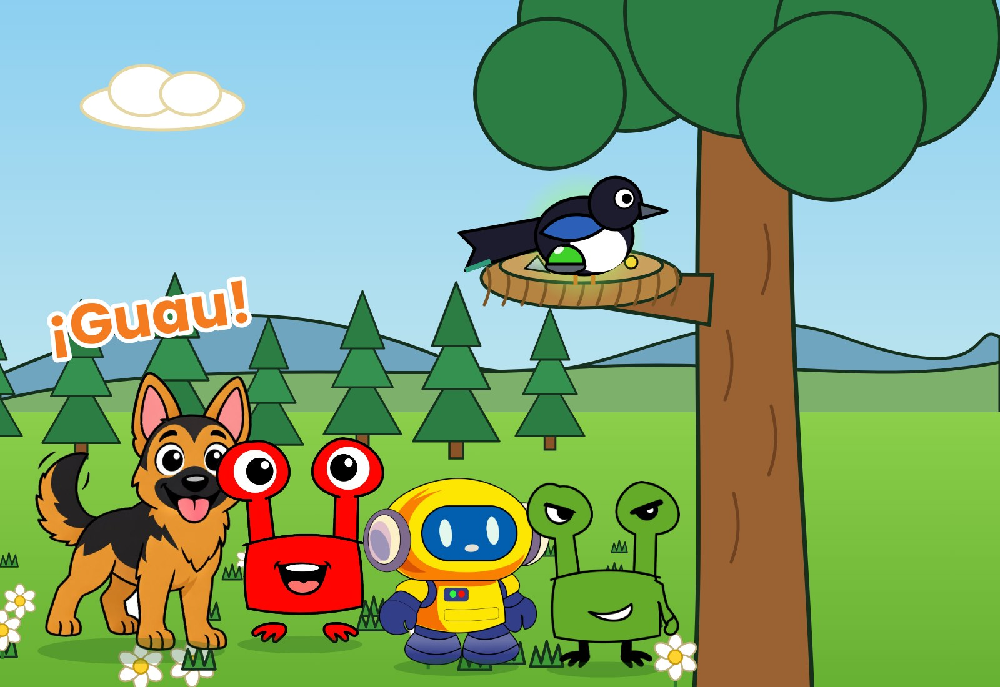
Allí, en lo alto de un árbol enorme, hay un nido gigante hecho de palitos, lana y trocitos de papel de plata. Y en medio del nido, brillando como un caramelo verde… ¡la luz verde de la nave!
Sentada encima, con cara de «yo no he sido», hay una urraca blanca y negra. ¡Chac, chac!
—Urraca —dice Tornillo, escaneándola—. Le encantan las cosas que brillan y las colecciona. Cuando nuestra luz cayó del cielo, le debió de parecer un tesoro.
Grin pone su sonrisa torcida.
—Tengo un plan: subo sin hacer ruido, se la quito y bajo. ¡Ni se entera!
—¿Y si ese fuera tu tesoro, Grin? —pregunta Roko—. ¿Te gustaría que alguien viniera a quitártelo?
A Grin se le caen las antenas.
—Pues… no.
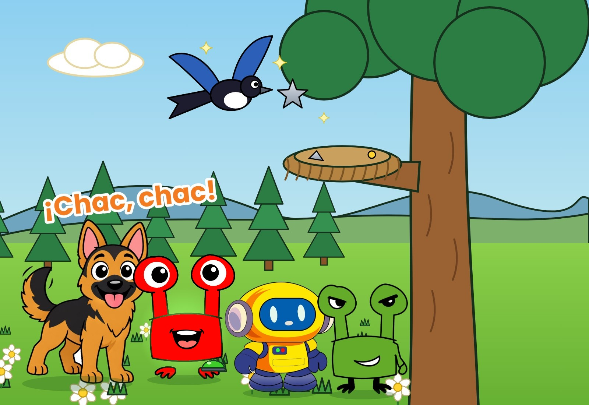
Roko se queda pensando. La urraca no es mala. Solo le gustan las cosas que brillan, igual que a Roko le gustan las estrellas.
—Hola, urraca —dice con voz suave—. Esa luz es de nuestra nave y la necesitamos para volver a casa. ¿Quieres que te la cambiemos por algo que brille igual de bonito?
La urraca ladea la cabeza. Pero ¿qué tienen ellos que brille? Roko rebusca en sus bolsillos y solo encuentra el papel plateado de una galleta de luna. No es mucho. Pero Grin, que tiene unos dedos muy listos para las trastadas, lo coge y empieza a doblar, doblar y doblar…
¡Y tachán! Una estrella de plata que reluce al sol.
La urraca baja volando, coge la estrella con el pico y deja caer la luz verde, que Roko atrapa al vuelo. ¡Chac, chac! Y se pierde entre las nubes, feliz.
—Ha sido la mejor trastada de mi vida —dice Grin, orgulloso—. Y no hemos tenido que quitarle nada a nadie.
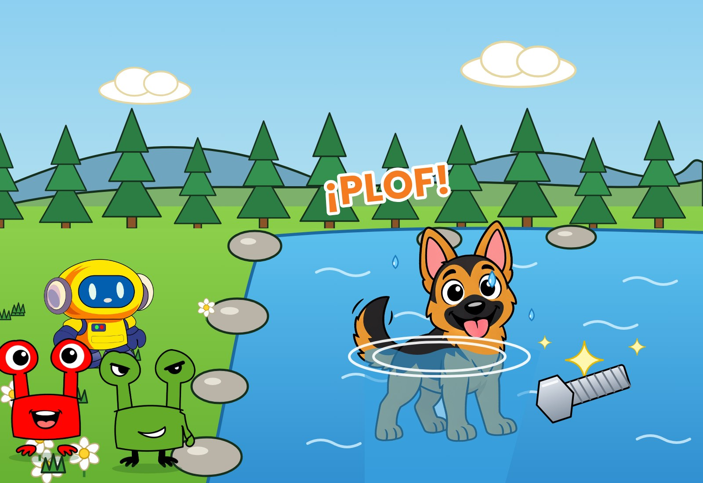
Con la luz verde bien guardada, Trueno vuelve a olfatear. Suf, suf. Los lleva por el bosque hasta un arroyo de agua clara que corre entre piedras redondas.
Roko se asoma y abre mucho los ojos. En el fondo, entre las piedras, algo grande y plateado brilla bajo el agua.
—¡El tornillo gordo!
Pero el agua está profunda y muy fría. Tornillo da un paso atrás.
—Yo no puedo entrar. Si me mojo, me oxido y hago ñic, ñic, ñic durante una semana.
—Yo tampoco. El agua me hace cosquillas en las antenas.
—Y a mí me da un poquito de miedo… —confiesa Roko.
Pero antes de que nadie diga nada más… ¡PLOF! Trueno salta al arroyo con un chapoteo enorme. Nada con las cuatro patas, chap, chap, chap, y mete la cabeza hasta el fondo.
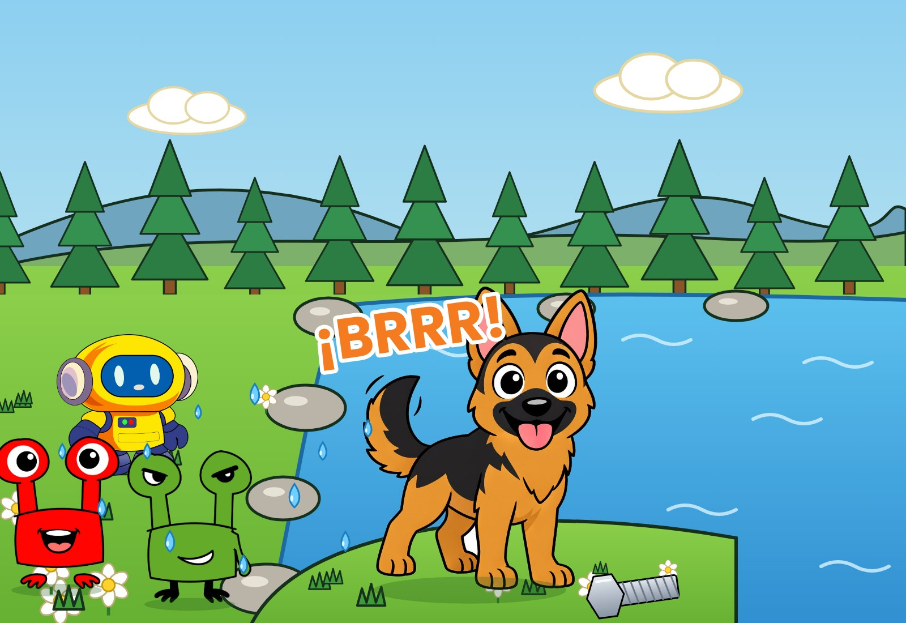
Cuando sale, lleva en la boca el tornillo gordo, tan grande que casi no le cabe. Lo deja con mucho cuidado a los pies de Tornillo.
Y entonces Trueno hace lo que hacen todos los perros mojados: se sacude de la cabeza a la cola. ¡BRRRRR!
Gotas por aquí, gotas por allá. Roko, Grin y Tornillo quedan empapados de arriba abajo.
—¡Me ha lavado hasta las antenas! —dice Grin, chorreando—. ¡Y me encanta!
—Ñic… ñic… —protesta Tornillo, secándose con un trapo—. Está bien. Esto ha valido la pena.
Roko se ríe tanto que se le doblan las antenas. Y abraza a Trueno, aunque esté hecho una sopa.
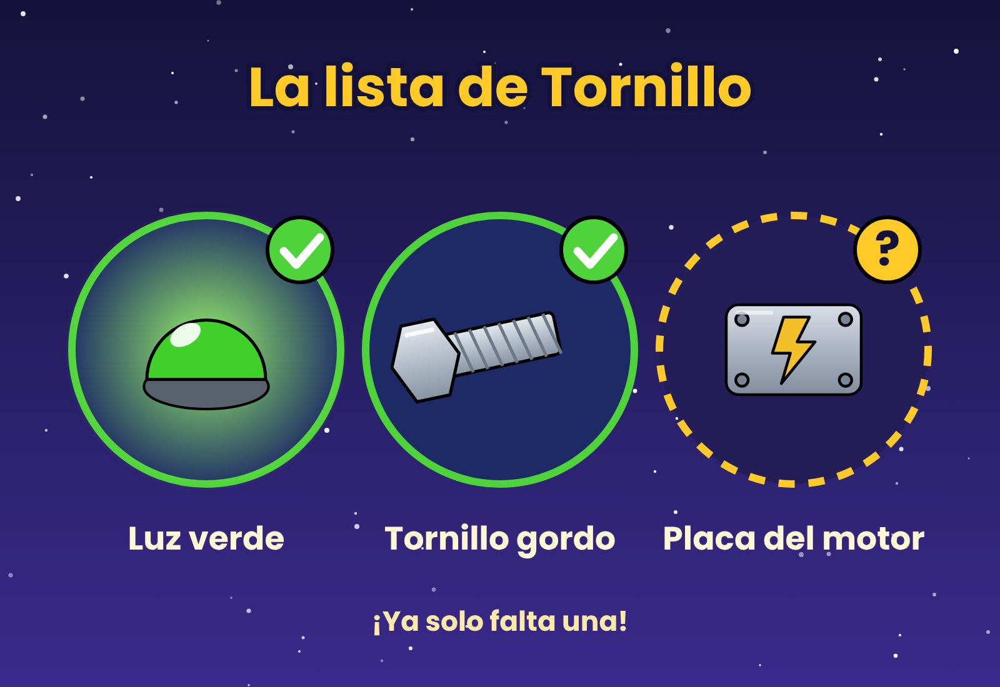
Tornillo se seca la cara y saca su libretita. Con un lápiz pequeñito, hace dos marcas.
—Luz verde: ✓. Tornillo gordo: ✓. Solo nos falta la placa del motor.
—¿Y dónde puede estar? —pregunta Roko.
—Es la pieza más grande y la que más pesa, así que habrá caído mucho más lejos que las otras.
Trueno estira las orejas. Ladra una vez, ¡guau!, y echa a andar colina arriba. Los amigos se miran, sonríen y lo siguen.
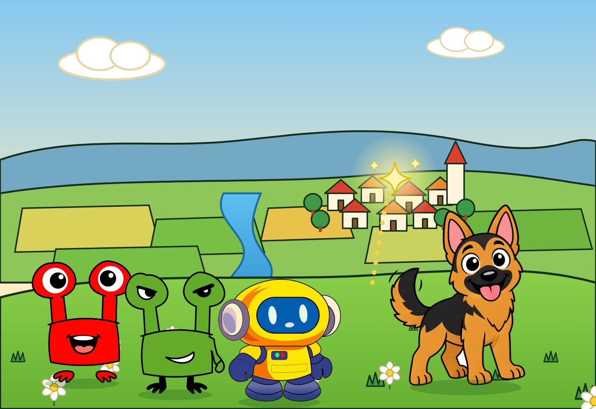
Suben y suben hasta lo alto de la colina. Desde allí se ve todo el valle: campos amarillos y verdes como una manta de retales, un río brillante como una cinta y, al fondo, casitas con tejados rojos y una torre con campana.
Trueno olfatea el aire. Suf, suf, suf. Y apunta con el hocico hacia las casitas. Allí, en medio del pueblo, algo destella al sol: ¡chas!, como una estrella caída.
—Bip… bup… Detecto una placa de metal. Está en ese pueblo.
—¿Un pueblo? ¿Con gente de la Tierra? —susurra Roko.
—¿Y cómo vamos a entrar sin que nos vean? —dice Grin—. Somos uno rojo, uno verde y uno de lata. Y… bueno, un perro, que es el único que pasa desapercibido.
Capítulo 6
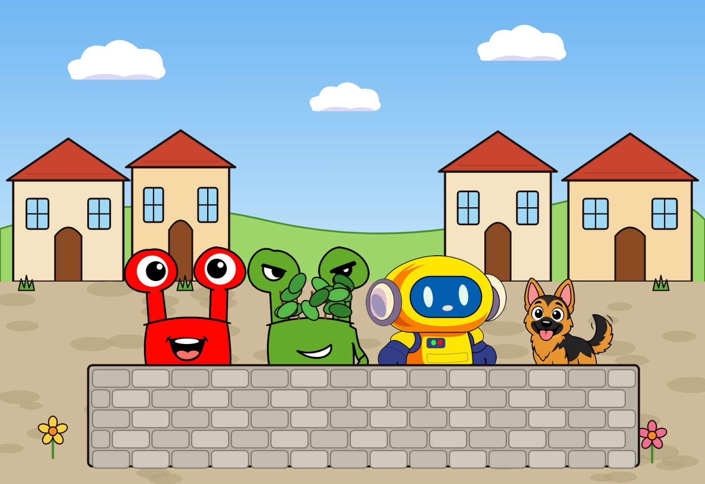
Bajan la colina de puntillas: tip, tip, tip. Se esconden tras un muro de piedra, al lado de las primeras casas del pueblo.
—Bip, bup. La placa está en el centro del pueblo —susurra Tornillo—. A ciento veinte pasos. Y por el camino hay vecinos.
—Pues nos disfrazamos —dice Grin—. Yo me pongo unas ramas en la cabeza y soy un arbusto.
Y se pone unas ramas en la cabeza. Un arbusto con dos antenas y una sonrisa torcida. Roko se tapa la boca para no reírse. Ji, ji.
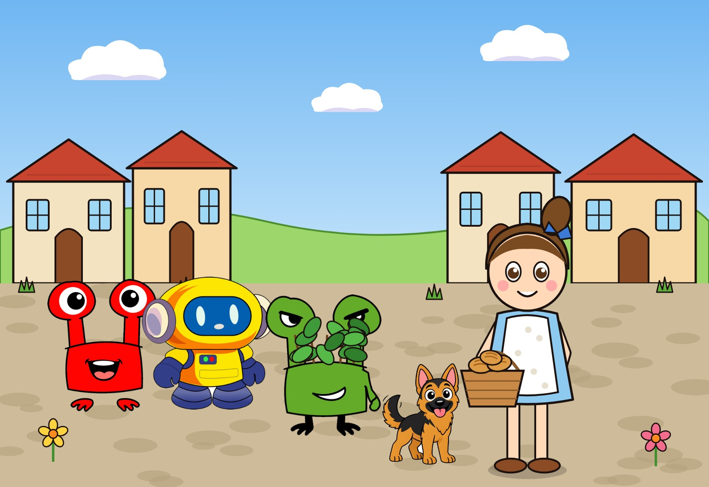
—¿Los arbustos se ríen? —dice una vocecita.
Los tres se quedan quietos como estatuas. Delante tienen a una niña de coleta y delantal blanco, con una cesta llena de panecillos calentitos. Los mira con los ojos muy abiertos.
Trueno mueve la cola. Fum, fum, fum. Y la niña, en vez de gritar, sonríe.
—¡Qué perro tan guapo! Me llamo Lola. Mi abuelo es el panadero. Vosotros no sois de por aquí, ¿verdad?
—Somos… de muy lejos —dice Roko, con sinceridad—. Ñamlandia. Y no sabemos mentir.
Lola se queda pensando un momento. Después se echa a reír.
—¡Entonces la estrella con prisa de anoche era vuestra! La vi bajar del cielo con una cola de fuego.
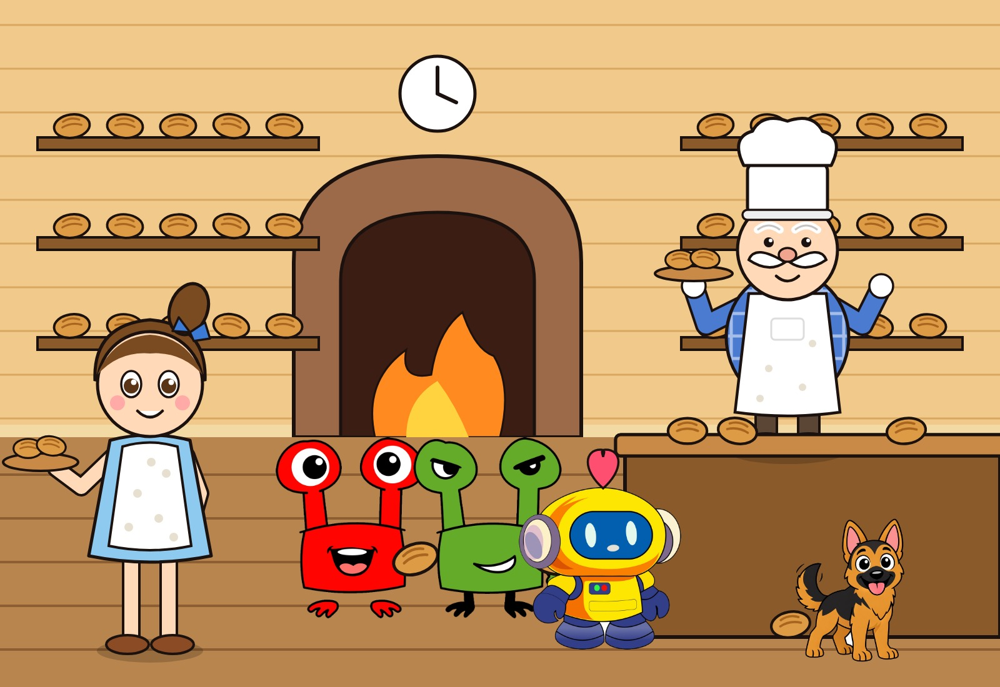
Lola los lleva a la panadería por la puerta de atrás. Dentro huele a pan recién hecho y a mantequilla. ¡Ñam!
El abuelo, un señor con bigote blanco y manos de harina, levanta las cejas… y luego les pone un panecillo en cada mano.
—Quien llega con hambre, es bienvenido —dice, y guiña un ojo.
Grin se come el suyo de un solo bocado. Tornillo no puede comer, pero huele el pan con su sensor y hace bip, bip de felicidad. Y Trueno, sentado muy derecho, recibe una cortecita crujiente que sabe a gloria.
—En Ñamlandia no tenemos nada tan rico —dice Grin, con la boca llena—. ¿Podemos quedarnos a vivir aquí?
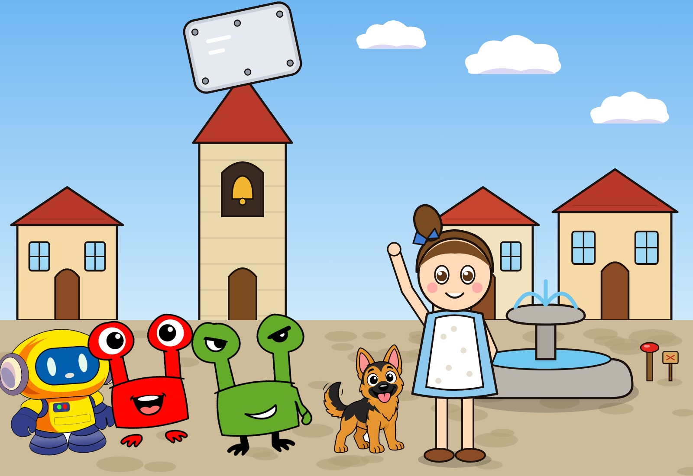
Cuando Roko les cuenta lo de la placa del motor, Lola los lleva hasta la plaza, que a esa hora está vacía porque todo el pueblo está comiendo en casa. Entonces señala hacia arriba.
—Cayó anoche sobre la torre de la iglesia. El alcalde dijo que era una veleta nueva y que había que dejarla ahí porque «da suerte al pueblo».
Allí está, en lo más alto, girando despacito con el viento: ñic, ñic, ñic. Brilla como un espejo.
—Es nuestra —confirma Tornillo—. Pero no podemos bajarla sin que lo noten. Y tampoco queremos que el pueblo se quede sin su veleta.
Roko mira la placa y luego a Lola. Y se le ocurre una idea.
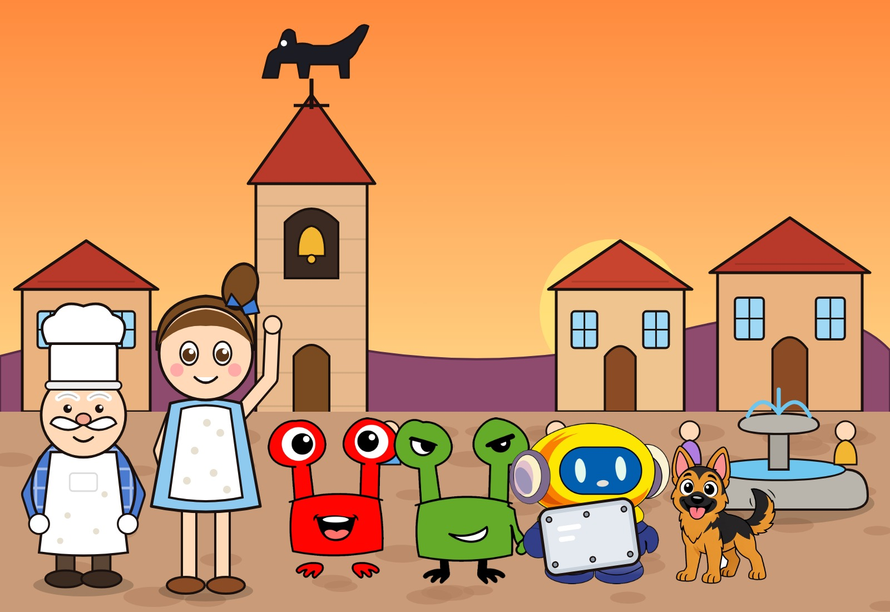
—¿Y si les hacemos una veleta nueva? Una más bonita.
El abuelo habla con el alcalde, que acepta refunfuñando. Después se arremanga. Tiene un yunque en el taller. Tornillo tiene sus herramientas. Y Lola tiene un dibujo: un perro con el hocico levantado y la cola al viento.
Trabajan toda la tarde: ¡clanc, clanc, clanc! Grin sujeta, Roko lima y Lola pinta el ojo. Cuando el sol se pone detrás de las montañas, la veleta nueva sube a la torre con una cuerda larga y la placa del motor baja, por fin, a manos de Tornillo.
—¡Guau! —ladra Trueno, al ver su retrato girando en lo alto.
Todo el pueblo sale a la plaza a mirar. Y nadie se acuerda ya de la vieja veleta.
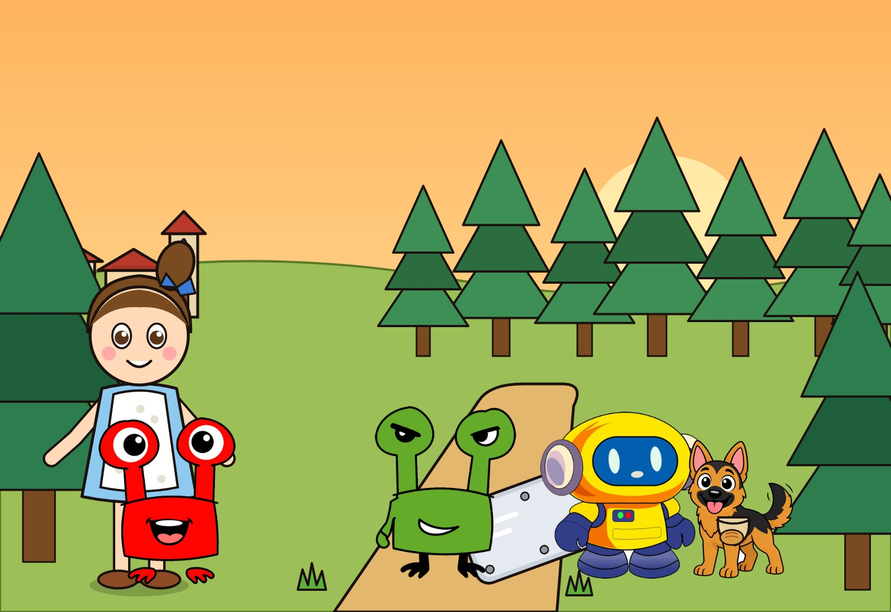
Es hora de volver a la nave. Lola los acompaña hasta el camino del bosque y les da una bolsa de panecillos.
—Para el viaje. Y volved a visitarnos, ¿vale?
Roko le da un abrazo muy fuerte. Es el primer abrazo que da a una niña de la Tierra, y le queda muy calentito.
—Prometido —dice—. Los amigos de la Tierra son los mejores del universo.
Se alejan entre los pinos, cargando la placa entre los cuatro, ¡hop, hop! Pero Grin se vuelve una vez más. Se ha acordado de algo que vio en la plaza, junto a la fuente: algo rojo y brillante que le guiñaba un ojo.
—Qué curioso… —murmura—. Aquello parecía un botón.
Capítulo 7
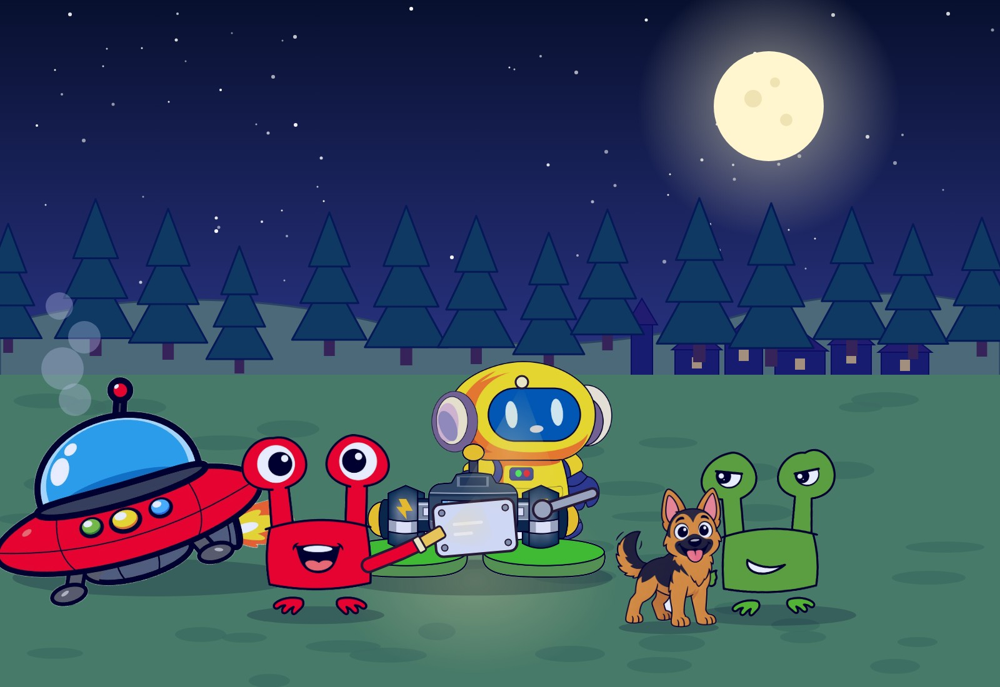
Cae la noche cuando llegan a la nave. Sobre los pinos hay una luna blanca y redonda, y en el prado la nave sigue de morros, con la antena doblada como un fideo.
Tornillo enciende la linterna de su frente y se pone manos a la obra: la luz verde, el tornillo gordo y, entre los cuatro, la gran placa del motor. ¡Clanc! Gira la llave inglesa: ñic, ñic, ñic.
—Bip, bup. Todo en su sitio. Pero la soldadura necesita una noche entera para enfriarse. Mañana, a primera hora, probamos el X-Turbo. Y esta noche, nadie toca nada.
Lo dice mirando a Grin. Grin pone cara de angelito.
—¿Yo? Pero si yo soy bueno.
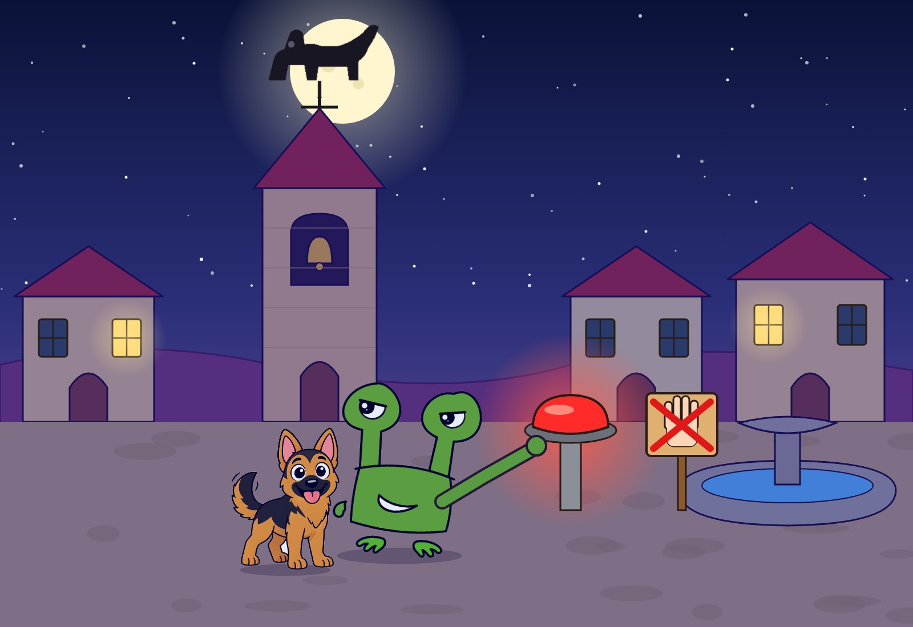
Roko se duerme enseguida, y Tornillo también: bip… bup… zzz. Trueno se hace una rosca a sus pies. Pero Grin da vueltas y más vueltas. Cada vez que cierra los ojos, ve lo mismo: un botón rojo que le guiña un ojo.
—Solo voy a mirarlo —se dice—. Mirar no es tocar.
Sale de puntillas: plic, plic, plic. Y detrás, un trotecito suave: tap, tap, tap. Es Trueno, que tiene el sueño muy ligero y no piensa dejar solo a su amigo.
En la plaza dormida, la fuente brilla bajo la luna. Y junto a ella, en un poste, está el botón: grande como un plato y reluciente como un caramelo. Al lado hay un cartel de madera con un dibujo: una manita con una cruz roja encima.
—Una manita… —dice Grin, ladeando la cabeza—. Seguro que significa «toca aquí con la mano». Qué gente tan amable.
Trueno gruñe bajito: grrr. Le empuja la pierna con el hocico. Pero Grin ya tiene el dedo en el aire.
—Solo un poquito. Un poquitito de nada…
¡CLIC!
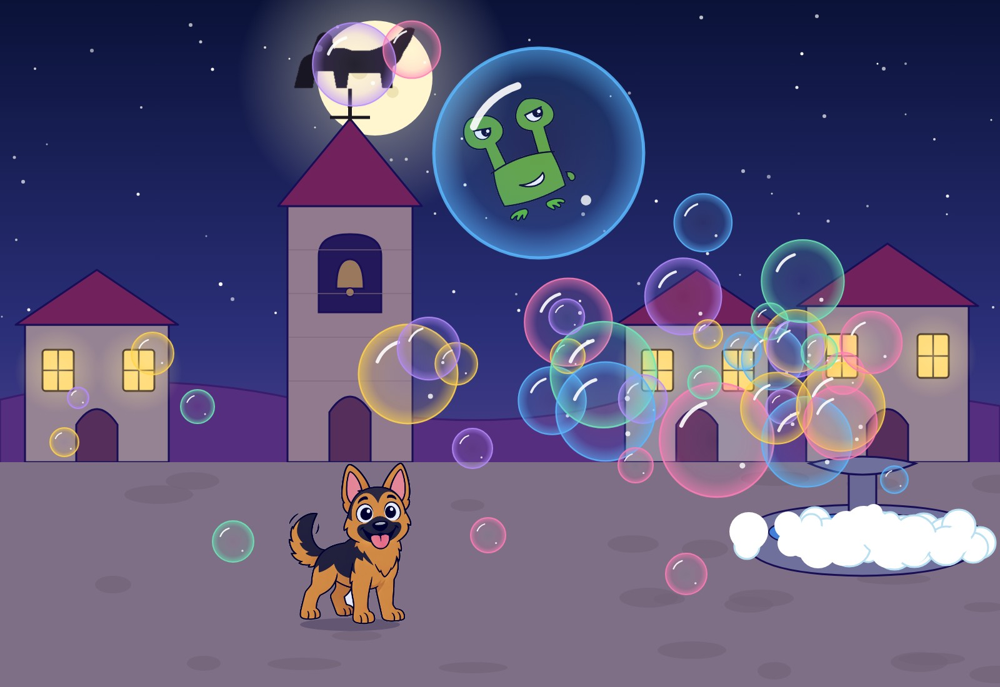
Al principio no pasa nada. Grin se encoge de hombros. Después, la fuente hace glub, glub, glub… y de pronto: ¡FUUUUSH!
Del centro sale una columna de burbujas. Burbujas enormes, grandes como globos, rosas, azules y doradas, que suben al cielo y se cuelan por todas las calles del pueblo.
—¡Oooh! —dice Grin, con los ojos como platos.
Una burbuja se acerca. Es la más grande de todas. Y, antes de que pueda apartarse, se lo traga entero: ¡blup!
Grin sube y sube dentro de su burbuja, pataleando en el aire. Pasa rozando la veleta nueva, que gira, ñic, ñic, como si lo saludara. Y con tanto meneo, la campana de la torre empieza a sonar: ¡DON, DON, DON!
Abajo, Trueno ladra sin parar: ¡GUAU, GUAU! Y por todo el pueblo se van encendiendo las luces de las ventanas.
—Uy —murmura Grin desde su burbuja—. Esto ya me ha pasado antes.
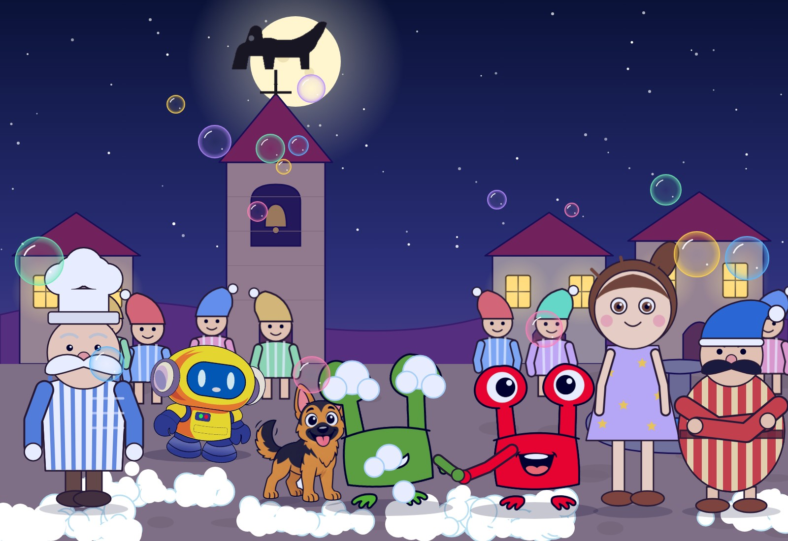
El DON, DON, DON llega hasta el prado. Roko abre los ojos. La cama de Grin está vacía. Y el sitio de Trueno, también.
—Bip, bup. Detecto burbujas —dice Tornillo, despertándose—. Muchas burbujas. Y vienen del pueblo.
Bajan la colina a la carrera: plic, plic, plic, clonc, clonc, clonc. Llegan a la plaza justo cuando la burbuja de Grin hace ¡POP! y él cae sentado en un montón de espuma: ¡plof!
Alrededor hay vecinos en pijama y gorro de dormir. Lola, con la coleta despeinada. El abuelo, con el bigote lleno de burbujas. Y un señor bajito y redondo, con un gorro de borla, que cruza los brazos.
—Soy el alcalde. ¿Quién ha pulsado el botón de la Fiesta de las Burbujas?
Silencio. Solo se oyen las burbujas que revientan: pop, pop, pop.
Grin mira a Roko. Roko no dice nada. Solo se coloca a su lado y le coge de la mano. Grin traga saliva. Se le caen las antenas.
—He sido yo —dice, muy bajito. Y luego más alto—: He sido yo. No entendía el cartel. Y aunque no lo entendiera, tenía que haber preguntado.
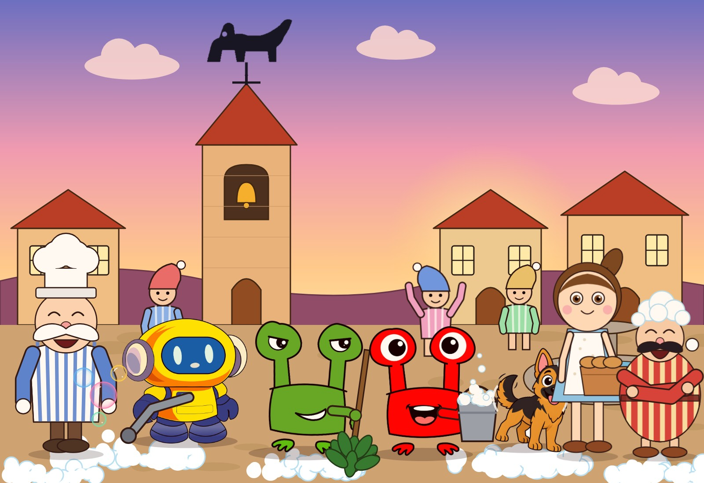
El alcalde frunce el bigote. Pero el abuelo, que tiene la cara llena de burbujas, empieza a reírse.
—Mi pobre botón. Llevaba un año esperando a mañana al mediodía. —Y se agacha junto a Grin—. Las travesuras se arreglan con las manos, muchacho. ¿Tienes manos?
—Dos —contesta Grin, mirándoselas.
—Pues toma una escoba.
Y se ponen todos a trabajar. Grin barre la espuma con unas ramas atadas a un palo: esta vez no es un disfraz, es una escoba de verdad. Roko recoge cubos y cubos. Lola reparte panecillos para el esfuerzo. Y Tornillo saca una manguera de su barriga y aspira las burbujas de las calles: ¡fffrrrrr!
Trueno, mientras tanto, persigue burbujas y las revienta con el hocico: ¡pop! Después se sacude de la cabeza a la cola: ¡BRRRRR! Y le deja al alcalde el gorro de dormir hecho una nube.
El alcalde, que no sonreía ni con cosquillas, se ríe tanto que se le cae la borla.
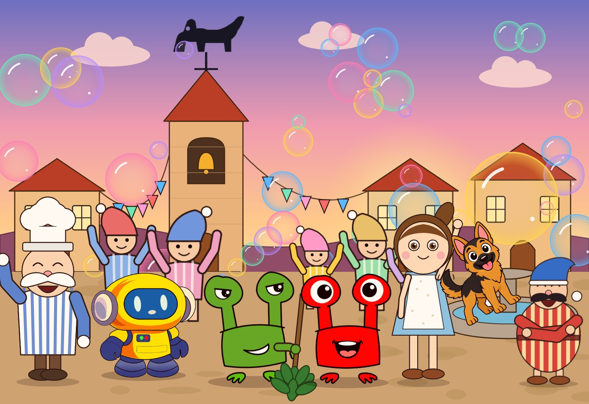
Cuando sale el sol, la plaza está limpia. Pero quedan burbujas por el cielo, y la luz las pinta de mil colores.
—Si el botón ya está pulsado —dice el alcalde, con el gorro de lado—, ¡que empiece la fiesta!
Y empieza. Los vecinos sacan panecillos y tambores, los niños bailan entre las burbujas y, en lo alto de la torre, la veleta con forma de perro gira y gira, contenta, mirando la fiesta.
Grin se acerca a Roko, con la escoba todavía en la mano.
—Prometo que, desde hoy, antes de tocar un botón, preguntaré.
—¿Siempre? —pregunta Roko.
Grin pone su sonrisa torcida.
—Casi siempre.
Roko se ríe. Ji, ji. Y Trueno ladra, ¡guau!, y se zambulle de cabeza en la burbuja más grande.
Capítulo 8
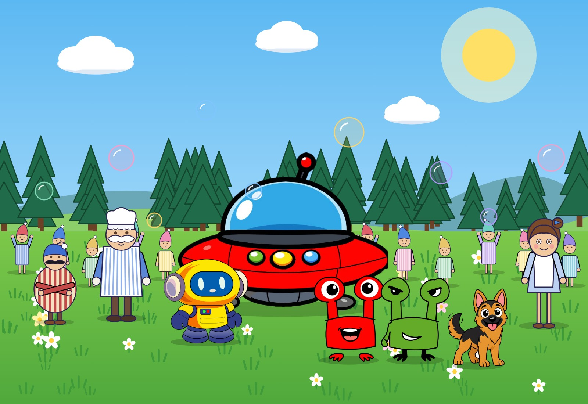
Cuando termina la fiesta, el sol ya está alto. Todo el pueblo sube al prado detrás de los Ñam Ñam, con panecillos, tambores y burbujas que se escapan de los bolsillos: pop, pop.
La nave los espera brillando al sol. Tiene la luz verde en su sitio, el tornillo gordo bien apretado y la gran placa plateada en el motor. Hasta la antena está derecha, sin ningún fideo.
Tornillo le da una vuelta con la linterna de su frente: bip, bup, bip.
—Todo en orden. La soldadura se ha enfriado y el X-Turbo está listo. Hoy volvemos a casa.
Nadie dice nada. Los tambores se quedan callados. Hasta las burbujas parecen flotar más despacito.
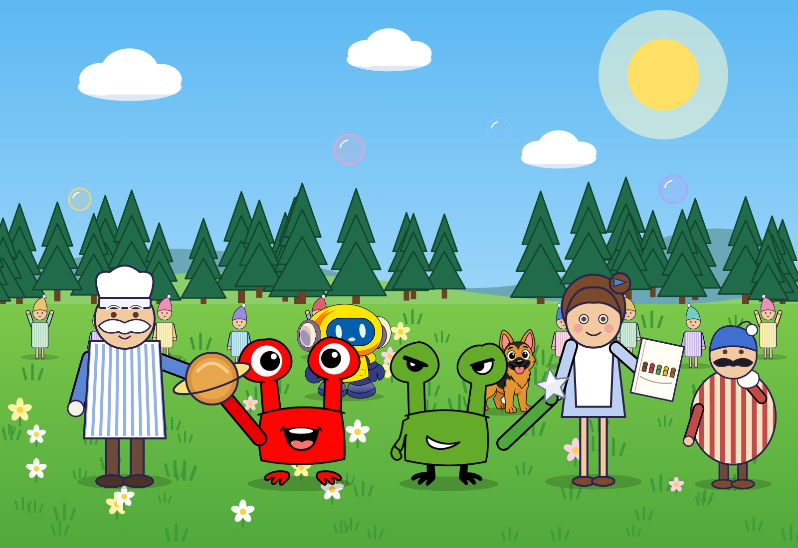
El primero en acercarse es el abuelo, con una bolsa enorme.
—Panecillos para el viaje. Y este otro, de parte de todo el pueblo.
Es un pan redondo como un planeta, con un anillo dorado de mantequilla alrededor. Roko lo mira con los ojos muy abiertos.
—Es igualito que Ñamlandia —susurra.
—Así sabrás que en la Tierra siempre tienes una panadería —dice el abuelo, con el bigote tembloroso.
El alcalde da un paso al frente. Todavía lleva puesto el gorro de dormir con borla: no se lo ha quitado desde la fiesta. Se cuadra, carraspea y empieza:
—En nombre del pueblo… —Se le rompe la voz y se suena la nariz: ¡PRRRRR! —. Volved cuando queráis. Pero avisad antes de tocar nada.
—Prometido. Siempre preguntaré.
Roko levanta una ceja.
—Vale, vale. Siempre de verdad.
Grin rebusca en el bolsillo y encuentra el papel plateado de un caramelo. Dobla, dobla y dobla… ¡y tachán! Una estrella de plata.
—Para que brille en tu ventana, Lola.
Lola la coge con las dos manos, como si fuera de cristal. Después abre su cuaderno y arranca una hoja. Es un dibujo: una niña, un Ñam Ñam rojo, un Ñam Ñam verde, un robot y un perro, todos cogidos de la mano, de la antena y de la pata.
—Para que lo pongáis en la nave. Así nos llevaréis con vosotros.
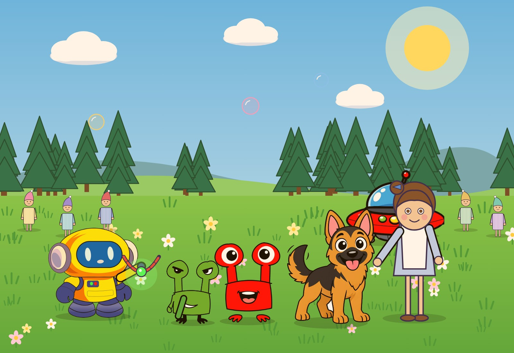
Solo queda una despedida. La más difícil.
Roko se agacha delante de Trueno. Le tiemblan un poquito las antenas.
—Trueno… tú nos encontraste las piezas. Nos sacaste del arroyo y nos buscaste en el pueblo. Si quieres venirte con nosotros, en Ñamlandia siempre habrá sitio para ti.
Trueno ladea la cabeza. Mira a Roko. Mira a Grin, que se limpia la nariz con la manga. Mira a Tornillo. Y mira a Lola, que le tiende la mano sin decir nada.
Entonces Trueno hace algo que Roko comprende enseguida. Da un lametón enorme a cada uno de sus amigos: ¡slurp! ¡slurp! ¡slurp! Y se sienta junto a Lola, con la cola barriendo la hierba: fum, fum, fum.
—Esta es su casa —dice Roko, sonriendo, aunque tiene los ojos brillantes.
Tornillo se acerca con algo en la mano: un collar hecho con los últimos cables que le sobraban, con una lucecita verde en el centro.
—Bip, bup. Esta luz se enciende cada vez que alguien en Ñamlandia mira hacia la Tierra. Así sabrás que pensamos en ti.
Y Tornillo, que es de metal pero tiene un corazón muy blandito, se seca un ojo con el trapo: ñic.
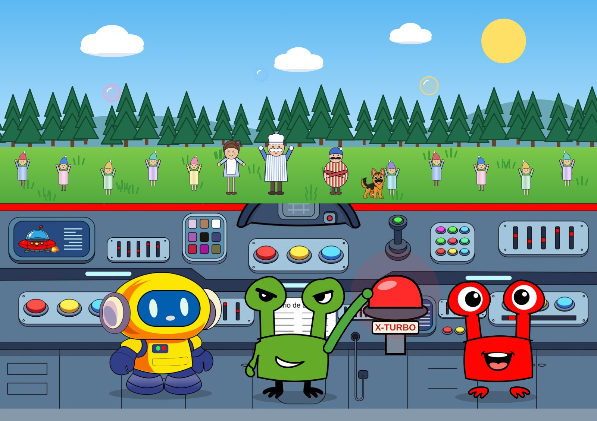
Suben a la nave. La cúpula azul se cierra: clic. Por la ventana, todo el pueblo agita las manos, y Trueno ladra: ¡GUAU!
Roko se sienta en su asiento. Tornillo, en los mandos. Y en el centro del panel, brillando como un caramelo, está el botón que pone X-TURBO.
Grin lo mira. El botón le mira a él. Grin levanta la mano, muy despacio… y la detiene en el aire.
—Tornillo, ¿puedo pulsarlo? Pregunto antes, ¿eh?
A Tornillo se le encienden todas las luces de la cara: bip, bup, biiip.
—Ahora sí. Ya está listo. Y esta vez, despacito. El Diario de a bordo ya está abierto por la página correcta.
Grin sonríe, casi con su sonrisa de siempre. Casi.
—Tres… dos… uno…
¡CLIC!
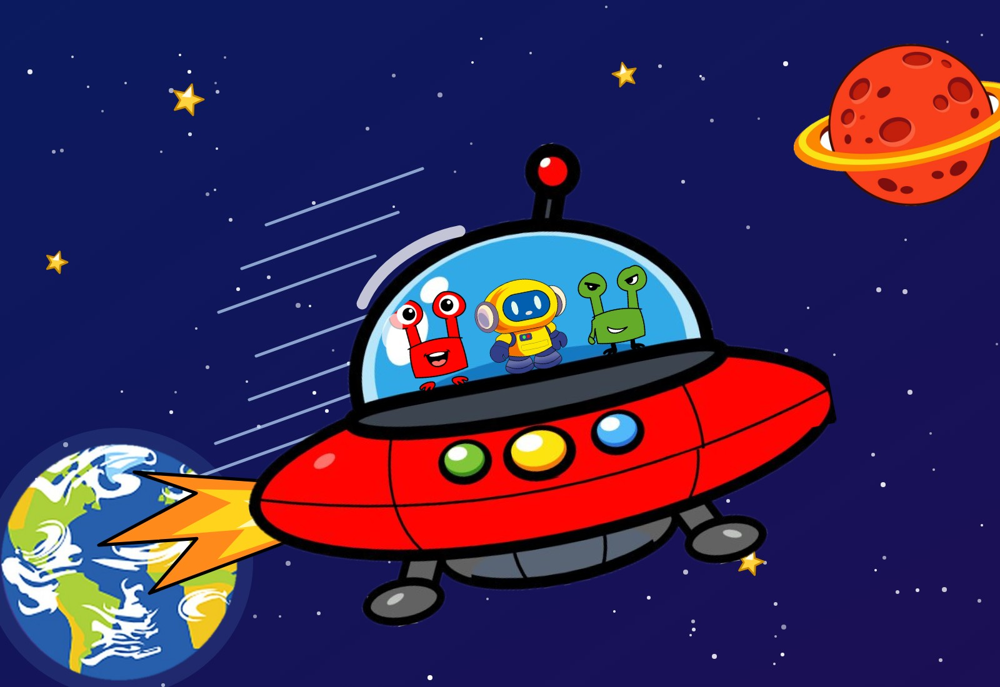
El X-Turbo ronronea como un gato grande: brrrr. La nave sube despacito, atraviesa las nubes y el cielo azul se vuelve violeta y, después, negro, lleno de estrellas. No se calienta ni un poquito.
—Bip, bup. Ya no hay aire. Ahora sí podemos correr.
¡FIUUUUUU! La Tierra se hace pequeñita, pequeñita, hasta parecer una canica azul con nubes de algodón. Roko y Grin pegan la nariz al cristal, igual que aquella noche en la ventana de Ñamlandia.
—¿Te acuerdas de cuando era solo un puntito que casi nadie miraba?
—Sí. Ahora ya sé lo que hay allí: panecillos, burbujas…
—Una veleta con cara de perro.
—Y amigos.
Grin se queda callado, con medio panecillo en la mano. Por una vez no se le ocurre ninguna trastada: solo sonríe, mirando la canica azul.
Tornillo escribe en la pantalla: «Destino: Ñamlandia». Y guarda otro destino, muy pequeñito, en un rincón: «Tierra. Visita a los amigos».
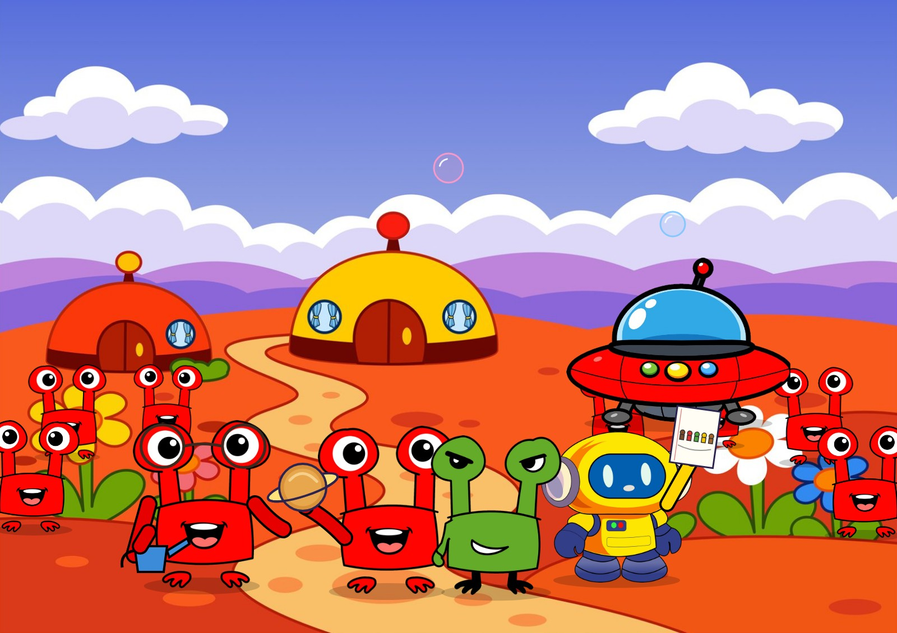
Al fondo aparece Ñamlandia: un planeta rojo con un anillo dorado que gira y gira como un aro de baile. Grin se despierta con una miga en la antena.
—¡Estamos en casa!
Aterrizan en la colina morada, de pie y sin una pizca de humo: plof, suavecito. Por el camino de arena viene medio pueblo, y delante de todos, con la regadera todavía en la mano, la abuela de Roko.
—¡Mi Roko! ¡Y mi Grin!
Les da un abrazo de Ñam Ñam, con antenas incluidas.
Cuando cuentan dónde han estado, nadie les cree. Un planeta azul, un perro enorme, una urraca, una burbuja gigante… Hasta que Roko enseña el dibujo de Lola y parte el pan con forma de planeta. Todos lo prueban: ¡ñam, ñam!
—Esto no es pan de Ñamlandia —dice la abuela, chupándose los dedos.
—Es pan de la Tierra —sonríe Roko—. De unos amigos.
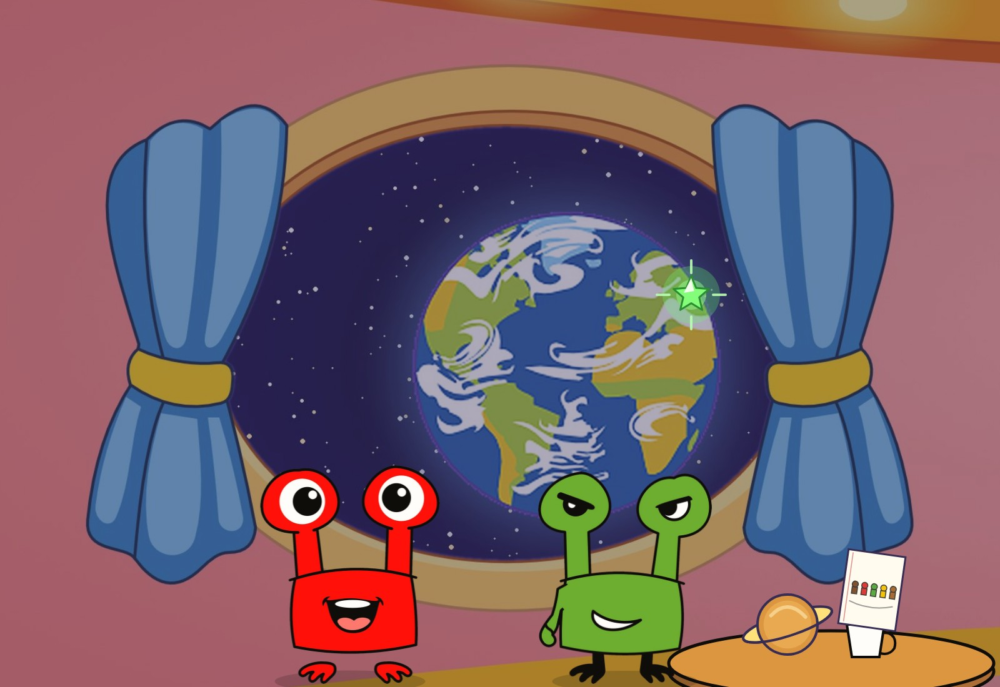
Esa noche, después de la sopa de estrellas, Roko y Grin se quedan en el comedor, delante de la gran ventana redonda. Por ella se ve el cielo morado de Ñamlandia y, muy a lo lejos, un puntito azul y verde.
Pero ya no es un puntito cualquiera. Allí vive una niña con coleta, un abuelo con bigote de harina y un perro con las orejas como velas.
—¿Tú crees que ahora estarán mirándonos?
Y, en ese momento, en medio del puntito azul, parpadea una lucecita verde. Guiña, guiña, guiña. Y desde muy, muy lejos, casi como un sueño, parece que se oye: ¡guau!
Roko y Grin se miran y se echan a reír, y se les doblan las antenas.
—Mañana le diremos a Tornillo que prepare la nave.
—Y esta vez, avisando.
—¿Siempre?
Grin pone su sonrisa torcida.
—Siempre. Bueno… casi.